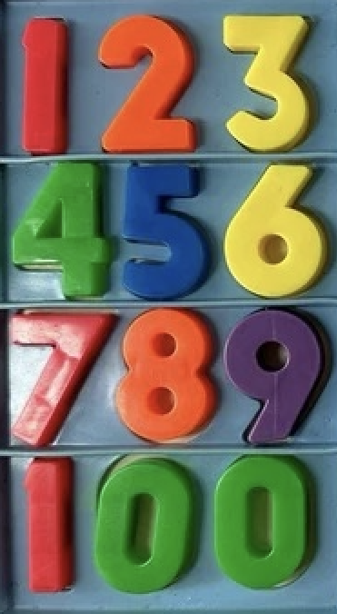
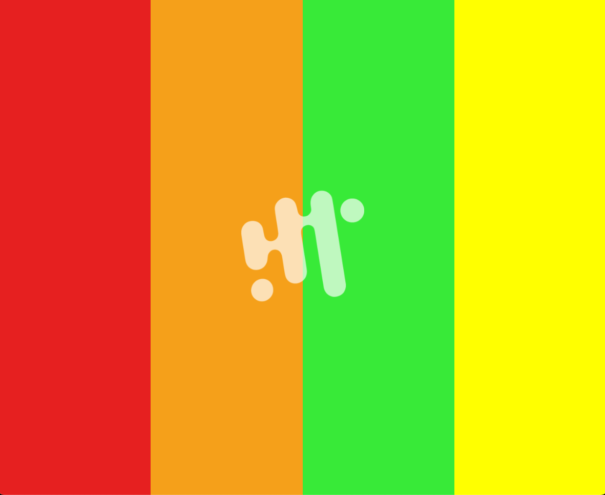

Q: How is time depicted in pop culture? What's your favorite sci-fi or historical fiction? What games treat time in unusual ways?
I recently read Matt Haig's The Midnight Library, which explores the concept of parallel lives.
What I remember the most about the world building of the book is the way Haig introduces the mechanisms
of "entering the alternate life". There are moments in daily life where you walk into a room and forget
what you were doing. Like when you
open the refridgerator and forget what you wanted to get. Or walk into a different room and forget why
you moved between spaces. In The Midnight Library, these blips in memory, in time, and in
space, are explained as entry points of you alternative self "trying on your life".
There are other shift in conciousness moments that I am fascinated by that connect with space and time
such as the feeling of déjà vu, or the instant moment of when we "wake up" from being on autopilot. In
some way, these are microscopic experiences of time travel, and hypothesicing different ways in which
time is in fact acting differently on us when we are in these states.
Making: Code that Changes at Different Rates
I feel like I have been stuck in an inspiration drought this week and it has been challenging for me to
come up with interesting project ideas for classes this week. Hopefully the visit to the Horological
Society of New York will help me get out of this slump.
My first attempt at the coding assignment was to create a different visualization of a
clock. The page is divided into 4 columns, each representing a different digit of time in a
HH:MM format. The columns are colored in reference to fisher price magnetic numbers. Then a graphic
element of the ITP/IMA logo is based on the seconds and inreases in size until it is fully fated out by
the end of the minute.


So that was my less creative attempt at code changing at different rates. But I want to share another project that I
did for shared minds earlier in the semester. This is a stream of consiousness journal
which have two major events happening that are reactive to the user's typing behavior. This assignment
was an attempt to create a visual representation of our thought processes and the speed in which we move
between thoughts.
The faster the user types = the more continous the stream of consiousness is = the closer the words are
placed beside eachother.
When punctuation is detected = the thought is broken = the texts shift positions to a new random
spot.